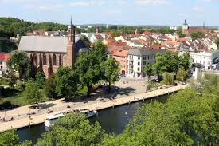

Brandeburgo
Brandeburgo es un estado federado fascinante que rodea por completo a la capital alemana, combinando un majestuoso legado imperial prusiano con una inmensa riqueza natural. Esta guía recopila de forma detallada todo lo necesario para planificar una visita perfecta.
- palacio de Sanssouci: El impresionante refugio de verano de Federico el Grande, famoso por sus terrazas de viñedos y su arquitectura rococó.
- barrio Holandés de Potsdam: El conjunto de casas de ladrillo rojo de estilo holandés más grande construido fuera de los Países Bajos.
- catedral de Brandeburgo: Una imponente obra maestra del estilo gótico báltico situada en la histórica isla Dominsel.
- palacios de Cecilienhof: Lugar histórico en Potsdam donde los líderes aliados se reunieron en 1945 para decidir el futuro de Europa tras la Segunda Guerra Mundial.
- estatua de Rolando de Brandeburgo: Escultura monumental de piedra del siglo XV que simboliza la justicia y la antigua independencia de la ciudad
- museo Barberini: Ubicado en un palacio reconstruido en Potsdam, alberga una de las colecciones de arte impresionista más importantes de Europa.
- museo Arqueológico de Brandeburgo: Situado en un antiguo monasterio medieval, exhibe más de 10,000 años de historia de la región.
- parque de Estudios Cinematográficos de Babelsberg: El estudio de cine a gran escala más antiguo del mundo, hoy convertido en un parque temático interactivo.
- museo de Aviación de Finowfurt: Uno de los museos aeronáuticos al aire libre más grandes de Alemania, ubicado en una antigua base militar soviética.
- uso de Vehículos: Conexión rápida por autopista A10. Rutas escénicas arboladas y alquiler de casas flotantes sin licencia náutica.
- tranporte Público: Trenes regionales (RE1) desde Berlín. Potsdam incluido en el billete regular de la zona Berlín ABC.
- Mejor Época: De mayo a septiembre. Ideal para paseos en bote por el Spree, ciclismo y festivales de verano.
- atraccion Destacada: Tropical Islands. El parque acuático techado más grande del mundo dentro de un hangar gigante
- pais: Alemania (Unión Europea)
- estado federado: Brandeburgo
- coordenadas geográficas: 52°23′49″N 13°03′53″E
- poblacion: 2.57 millones de habitantes (Aproximadamente)
- Idioma: Alemán (Con presencia de la lengua eslava sorbia en la región del Spree)
Monumentos Históricos
Museos y Centros Culturales
Datos Prácticos para el Viajero
🗺️ Ficha Técnica de la Localidad (Para la Barra Lateral o Encabezado)
